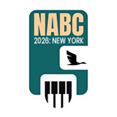

<!DOCTYPE html>
<html>
<head>
  <!--
    If you are serving your web app in a path other than the root, change the
    href value below to reflect the base path you are serving from.

    The path provided below has to start and end with a slash "/" in order for
    it to work correctly.

    For more details:
    * https://developer.mozilla.org/en-US/docs/Web/HTML/Element/base

    This is a placeholder for base href that will be replaced by the value of
    the `--base-href` argument provided to `flutter build`.
  -->
  <base href="/NABC/">

  <meta charset="UTF-8">
  <meta content="IE=Edge" http-equiv="X-UA-Compatible">
  <meta name="viewport" content="width=device-width, initial-scale=1.0, maximum-scale=1.0, user-scalable=no, viewport-fit=cover">
  <meta name="description" content="NABC 2026 — North America Bengali Conference member portal: events, registration, accommodation and more.">

  <!-- PWA theme colour (Android Chrome address bar / task switcher) -->
  <meta name="theme-color" content="#1565C0">

  <!-- iOS / Android add-to-home-screen (installable PWA) meta tags & icons -->
  <meta name="mobile-web-app-capable" content="yes">
  <meta name="apple-mobile-web-app-capable" content="yes">
  <meta name="apple-mobile-web-app-status-bar-style" content="black">
  <meta name="apple-mobile-web-app-title" content="NABC 2026">
  <meta name="application-name" content="NABC 2026">
  <link rel="apple-touch-icon" href="icons/Icon-192.png">

  <!-- Favicon -->
  <link rel="icon" type="image/png" href="favicon.png"/>

  <title>NABC 2026</title>
  <link rel="manifest" href="manifest.json">

  <!-- Capture the install event as early as possible (it can fire before body scripts run) -->
  <script>
    window.__nabcDeferredPrompt = null;
    window.addEventListener('beforeinstallprompt', function (e) {
      e.preventDefault();
      window.__nabcDeferredPrompt = e;
      // If the install UI is already mounted, let it know.
      if (window.__nabcShowInstall) window.__nabcShowInstall();
    });
  </script>

  <!-- Custom "Install app" prompt (works on Android/Chrome/Edge/Desktop + iOS instructions) -->
  <style>
    #nabc-install-root, #nabc-install-root * { box-sizing: border-box; }
    #nabc-install-root {
      position: fixed; left: 0; right: 0; bottom: 0; z-index: 2147483000;
      display: none; justify-content: center; pointer-events: none;
      font-family: -apple-system, BlinkMacSystemFont, "Segoe UI", Roboto, Helvetica, Arial, sans-serif;
    }
    #nabc-install-root.nabc-show { display: flex; }
    .nabc-card {
      pointer-events: auto;
      width: 100%; max-width: 460px; margin: 0 12px 14px;
      background: #ffffff; color: #102a43;
      border-radius: 16px;
      box-shadow: 0 10px 40px rgba(13, 71, 161, 0.28), 0 2px 8px rgba(0,0,0,0.12);
      overflow: hidden;
      transform: translateY(120%); opacity: 0;
      transition: transform .35s cubic-bezier(.2,.8,.2,1), opacity .35s ease;
    }
    #nabc-install-root.nabc-show .nabc-card { transform: translateY(0); opacity: 1; }
    .nabc-bar {
      height: 5px; background: linear-gradient(90deg, #1565C0, #0D47A1);
    }
    .nabc-body { display: flex; align-items: center; gap: 14px; padding: 16px 16px 14px; }
    .nabc-icon {
      width: 54px; height: 54px; border-radius: 13px; flex: 0 0 auto;
      box-shadow: 0 2px 6px rgba(0,0,0,0.18); object-fit: cover; background: #0D47A1;
    }
    .nabc-text { flex: 1 1 auto; min-width: 0; }
    .nabc-title { font-size: 16px; font-weight: 700; line-height: 1.2; }
    .nabc-sub { font-size: 13px; color: #486581; margin-top: 3px; line-height: 1.35; }
    .nabc-actions { display: flex; gap: 8px; padding: 0 16px 16px; }
    .nabc-btn {
      flex: 1 1 auto; border: 0; cursor: pointer; font-size: 15px; font-weight: 600;
      padding: 11px 14px; border-radius: 10px; transition: filter .15s ease, background .15s ease;
    }
    .nabc-btn-primary { color: #fff; background: linear-gradient(90deg, #1565C0, #0D47A1); }
    .nabc-btn-primary:hover { filter: brightness(1.07); }
    .nabc-btn-ghost { flex: 0 0 auto; color: #486581; background: #eef2f7; }
    .nabc-btn-ghost:hover { background: #e2e8f0; }
    .nabc-close {
      position: absolute; top: 8px; right: 12px; border: 0; background: transparent;
      color: #9aa7b8; font-size: 22px; line-height: 1; cursor: pointer; padding: 6px;
    }
    /* iOS step instructions */
    .nabc-ios { padding: 0 16px 18px; }
    .nabc-step { display: flex; align-items: center; gap: 10px; font-size: 14px; color: #243b53; margin-top: 10px; }
    .nabc-step-num {
      flex: 0 0 auto; width: 22px; height: 22px; border-radius: 50%;
      background: #1565C0; color: #fff; font-size: 12px; font-weight: 700;
      display: flex; align-items: center; justify-content: center;
    }
    .nabc-share { width: 18px; height: 18px; vertical-align: -3px; }
    @media (prefers-color-scheme: dark) {
      .nabc-card { background: #14202e; color: #e3eaf2; }
      .nabc-sub { color: #93a4b8; }
      .nabc-step { color: #cdd9e6; }
      .nabc-btn-ghost { background: #22303f; color: #aebccd; }
      .nabc-btn-ghost:hover { background: #2b3b4d; }
    }
  </style>

  <!--
    You can customize the "flutter_bootstrap.js" script.
    This is useful to provide a custom configuration to the Flutter loader
    or to give the user feedback during the initialization process.

    For more details:
    * https://docs.flutter.dev/platform-integration/web/initialization
  -->
  <script src="flutter_bootstrap.js" async></script>

  <!-- Install-prompt UI logic -->
  <script>
  (function () {
    var DISMISS_KEY = 'nabc_pwa_dismissed_at';
    var DISMISS_DAYS = 7;

    function isStandalone() {
      return (window.matchMedia && window.matchMedia('(display-mode: standalone)').matches) ||
             window.navigator.standalone === true;
    }
    function isIOS() {
      var ua = window.navigator.userAgent;
      var iOSDevice = /iPad|iPhone|iPod/.test(ua) ||
        // iPadOS 13+ reports as Mac but is touch-capable
        (/Macintosh/.test(ua) && 'ontouchend' in document);
      return iOSDevice && /Safari/.test(ua) && !/CriOS|FxiOS|EdgiOS/.test(ua);
    }
    function recentlyDismissed() {
      try {
        var ts = parseInt(localStorage.getItem(DISMISS_KEY) || '0', 10);
        if (!ts) return false;
        return (Date.now() - ts) < DISMISS_DAYS * 24 * 60 * 60 * 1000;
      } catch (e) { return false; }
    }
    function rememberDismiss() {
      try { localStorage.setItem(DISMISS_KEY, String(Date.now())); } catch (e) {}
    }

    var root, mounted = false, iosMode = false;

    function buildUI() {
      if (mounted) return;
      mounted = true;
      root = document.createElement('div');
      root.id = 'nabc-install-root';

      var actionsHtml = iosMode
        ? '<div class="nabc-ios">' +
            '<div class="nabc-step"><span class="nabc-step-num">1</span>' +
              '<span>Tap the <strong>Share</strong> button ' +
              '<svg class="nabc-share" viewBox="0 0 24 24" fill="none" stroke="#1565C0" stroke-width="2" stroke-linecap="round" stroke-linejoin="round"><path d="M12 16V4M12 4l-4 4M12 4l4 4"/><path d="M5 12v7a1 1 0 0 0 1 1h12a1 1 0 0 0 1-1v-7"/></svg>' +
              ' in the toolbar</span></div>' +
            '<div class="nabc-step"><span class="nabc-step-num">2</span><span>Choose <strong>Add to Home Screen</strong></span></div>' +
            '<div class="nabc-step"><span class="nabc-step-num">3</span><span>Tap <strong>Add</strong> — done!</span></div>' +
          '</div>'
        : '<div class="nabc-actions">' +
            '<button class="nabc-btn nabc-btn-ghost" id="nabc-later">Not now</button>' +
            '<button class="nabc-btn nabc-btn-primary" id="nabc-install">Install app</button>' +
          '</div>';

      root.innerHTML =
        '<div class="nabc-card" role="dialog" aria-label="Install NABC 2026">' +
          '<div class="nabc-bar"></div>' +
          '<button class="nabc-close" id="nabc-close" aria-label="Close">&times;</button>' +
          '<div class="nabc-body">' +
            '' +
            '<div class="nabc-text">' +
              '<div class="nabc-title">Install NABC 2026</div>' +
              '<div class="nabc-sub">' +
                (iosMode
                  ? 'Add it to your Home Screen for quick, full-screen access.'
                  : 'Get the app on your device for a faster, full-screen experience.') +
              '</div>' +
            '</div>' +
          '</div>' +
          actionsHtml +
        '</div>';

      document.body.appendChild(root);

      document.getElementById('nabc-close').addEventListener('click', hide);
      var later = document.getElementById('nabc-later');
      if (later) later.addEventListener('click', hide);
      var install = document.getElementById('nabc-install');
      if (install) install.addEventListener('click', doInstall);
    }

    function show() {
      buildUI();
      // next frame so the slide-up transition runs
      requestAnimationFrame(function () { root.classList.add('nabc-show'); });
    }
    function hide() {
      if (root) root.classList.remove('nabc-show');
      rememberDismiss();
    }
    function doInstall() {
      var dp = window.__nabcDeferredPrompt;
      if (!dp) { hide(); return; }
      dp.prompt();
      dp.userChoice.then(function () {
        window.__nabcDeferredPrompt = null;
        hide();
      });
    }

    // ---- Public API used by the Flutter app (in-app "Install app" button) ----
    var readyCbs = [];
    function notifyReady() {
      readyCbs.forEach(function (c) { try { c(); } catch (e) {} });
    }
    // True once the app can be installed: native prompt captured, or iOS (manual steps).
    window.nabcIsInstallReady = function () {
      return (!!window.__nabcDeferredPrompt || isIOS()) && !isStandalone();
    };
    window.nabcIsStandalone = function () { return isStandalone(); };
    // Let Flutter (re)check when the install state changes.
    window.nabcRegisterReady = function (cb) {
      if (typeof cb === 'function') { readyCbs.push(cb); }
    };
    // Trigger install from anywhere (e.g. an in-app button). Handles every platform.
    window.nabcInstall = function () {
      if (window.__nabcDeferredPrompt) { doInstall(); return; }
      iosMode = isIOS();
      show(); // iOS -> manual steps; otherwise a branded reminder card
    };

    // Exposed so the early beforeinstallprompt handler can trigger us.
    window.__nabcShowInstall = function () {
      notifyReady(); // always let the in-app button appear, even if the banner is suppressed
      if (isStandalone() || recentlyDismissed()) return;
      iosMode = false;
      show();
    };

    window.addEventListener('appinstalled', function () {
      window.__nabcDeferredPrompt = null;
      if (root) root.classList.remove('nabc-show');
      notifyReady(); // lets the in-app button hide itself
    });

    function init() {
      if (isStandalone() || recentlyDismissed()) return;
      if (window.__nabcDeferredPrompt) {
        window.__nabcShowInstall();
      } else if (isIOS()) {
        // iOS Safari never fires beforeinstallprompt — show manual steps after a short delay.
        iosMode = true;
        setTimeout(show, 2500);
      }
      // Other browsers: wait for beforeinstallprompt (handled by __nabcShowInstall).
    }

    if (document.readyState === 'loading') {
      document.addEventListener('DOMContentLoaded', init);
    } else {
      init();
    }
  })();
  </script>
</body>
</html>
